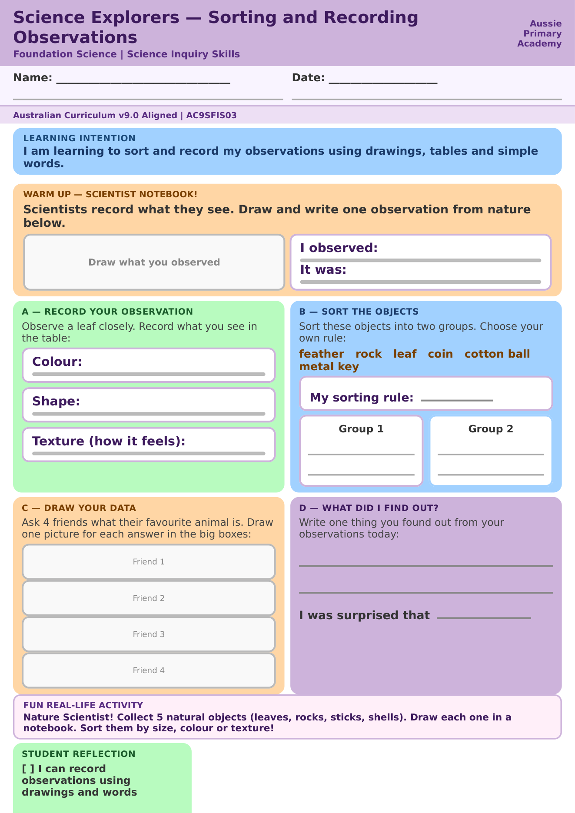

What students practise
- Sorting objects by a visible or touch-based property
- Recording observations in a simple table
- Representing counts in a basic graph
- Comparing results and noticing what is the same or different
Australia · Foundation · Science
Sort objects, record what you notice in simple tables and graphs, and identify patterns with guided Foundation science activities.

Print the two-page worksheet. Where an activity asks children to observe or handle real objects, choose safe everyday items and supervise as needed. Children may point, draw or explain their observations aloud with adult support.
Use the completed activities to talk about what was noticed and how the observations were recorded.
This resource supports Foundation learners to represent observations in provided templates and identify simple patterns with guidance.
Australian Curriculum v9.0: AC9SFI03.
Continue building early science observation and inquiry skills.
Use the five senses to make safe observations.
Ask questions and make predictions from experience.